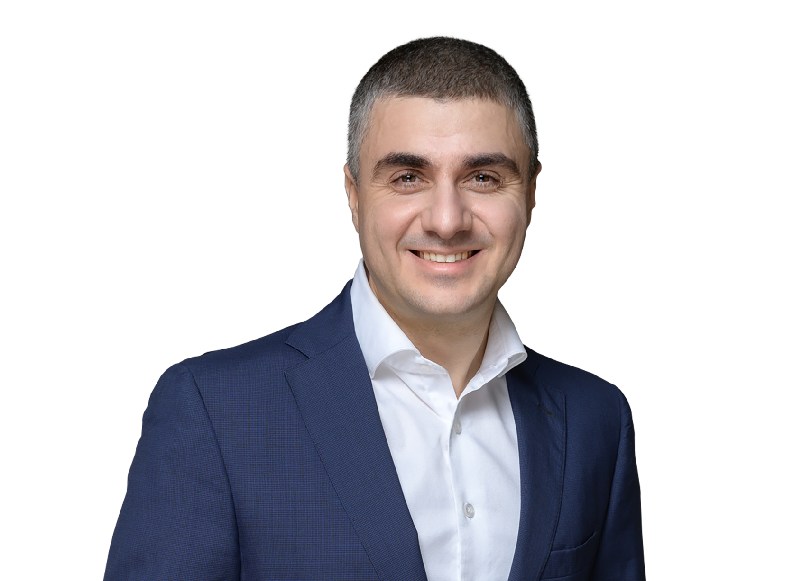

Материнская компания
финтех-сервиса
CarMoney
SmartTechGroup — материнская компания
финтех-сервиса
CarMoney.
Учреждена в октябре 2022 года.
Головной офис — в г. Москве.
CarMoney сегодня – это российская федеральная компания,
представленная в 72 регионах страны, занимает лидирующие позиции
в сегменте обеспеченных займов по версии авторитетных рейтинговых
агентств.
Проект был запущен в 2016 году.
Основатель – предприниматель,
инвестор
Антон Зиновьев.
Анна Калугина
Генеральный директор ПАО «СТГ»
Более 20 лет в финансовой сфере, работала в крупных российских и международных системообразующих банках и финансовых компаниях.
Начала свою карьеру в GE Money Bank, где за 11 лет прошла путь от стартовой позиции до регионального директора по продажам и операционной поддержке бизнеса. Руководила управлением поддержки бизнеса в проекте Touch Bank венгерской OTP Group.
Имеет опыт успешных продаж как в оффлайн-сегменте, так и в e-commerce, а также опыт предпринимательской деятельности.
Член ассоциации независимых директоров (АНД).
В октябре 2018 года возглавила направление продаж и развития партнерской сети CarMoney. С ее приходом кредитный портфель компании и количество активных займов выросли почти два раза. Был перестроен бизнес-процесс, что позволило нарастить долю online-продаж до 87%.
В 2020 году заняла должность генерального директора CarMoney, в декабре 2023 года назначена на пост генерального директора ПАО «СТГ».
Елена Яшина
Генеральный директор ООО «МФК Кармани» / CarMoney (дочерняя компания ПАО «СТГ»)
Более 20 лет в банковской сфере. Долгое время работала в GE Money Bank, где возглавляла все стадии взыскания просроченной задолженности. В ОТП Банке (TouchBank) руководила управлением дистанционного обслуживания клиентов. Имеет ряд достижений и наград.
Обладает значительным опытом по созданию, управлению Операционных Центров, включая Контакт Центр, телемаркетинг, взыскание, андеррайтинг. Имеет достижения в области развития дистанционных каналов обслуживания и продаж, продвижения банковских продуктов, внедрения инновационных решений, разработки новых стратегий по обслуживанию клиентов.
С 2019 года работала в CarMoney операционным директором, с ноября 2021 года занимала позицию Заместителя Генерального директора. С декабря 2023 года назначена на должность ВРИО генерального директора CarMoney.

Артём Саратикян
Директор управления корпоративных финансов ООО «МФК Кармани» / CarMoney (дочерняя компания ПАО «СТГ»)
Более 15 лет занимается привлечением финансирования в крупных российских и иностранных компаниях (ПАО «Энел Россия», ГК Eqvanta, Кредит Европа Банк, ГК «Независимость»). Успешный запуск с нуля направления корпоративных финансов в финансовых компаниях с привлечением более 500 инвесторов и портфелем более 3 млрд рублей. Размещение облигаций на ММВБ на сумму более 6 млрд рублей, привлечение долгосрочного финансирования для покупки бизнеса.
Международный опыт в области привлечения финансирования в Италии и Люксембурге. Окончил МГИМО со степенью бакалавра менеджмента, выпускник ряда программ МШУ «Сколково». В июне 2017 года возглавил управление корпоративных финансов CarMoney. В компании отвечает за привлечение внешнего финансирования, в том числе за работу с частными инвесторами. За время работы в компании успешно провел 5 облигационных выпусков на общую сумму более 1,5 млрд рублей, инвестиционный портфель компании достиг 2,8 млрд рублей.
Стратегия развития SmartTechGroup предполагает укрепление лидерской позиции в залоговом сегменте рынка,
расширение продуктовой линейки и повышение операционной эффективности бизнеса.
Единая стратегия масштабирования: привлечение финансирования для кратного увеличения объема выдач без
существенного увеличения операционных расходов. Кратный рост доли рынка в сегменте автозаймов за счет
использования нереализованного потенциала рынка.
ИТ-стратегия
- развитие и приобретение инновационных технологических решений в части продаж, скоринга, обслуживания, процессов взыскания и иных финансовых сервисов;
- обеспечение информационной безопасности, непрерывности, отказоустойчивости и операционной эффективности функционирования бизнеса;
- поддержание лидерских позиций в создании уникального клиентского опыта на всем жизненном цикле продуктов компании;
- расширение продуктовой линейки компании для диверсификации предлагаемых клиентам услуг;
- постоянная автоматизация, оптимизация и роботизация процессов компании;
- в средне и долгосрочной перспективе – предоставление технологических сервисов компании другим финансовым организациям по SAAS модели;
- развитие и приобретение инновационных технологических решений, в том числе в части замещения иностранных сервисов, прекративших работу в России;
- укрепление технологической команды под стратегические задачи и рекрутинг специалистов с опытом работы в ведущих технологичных и финансовых организациях за счет привлекательных условий, следования ценностям и миссии компании и безупречной репутации работодателя в своем сегменте.
Продуктовая стратегия
- укрепление лидерской позиции в залоговом сегменте рынка;
- постепенное снижение ставки займа для выхода в новый клиентский сегмент;
- создание и развитие технологического продукта для сотрудничества с банками;
- повышение операционной эффективности бизнеса за счет монетизации клиентского потока путем запуска беззалоговых продуктов и внедрении инновационной технологии smart collection;
- добавление новых услуг/сервисов партнеров CarMoney для автомобилистов.
Маркетинговая стратегия
- рост медийных активностей;
- развитие партнерских проектов с телеком-операторами: рекламное продвижение через сотовых операторов;
- добавление новых услуг/сервисов партнеров CarMoney для автомобилистов;
- развитие партнерских проектов с банками. В частности, проектов по монетизации отказного трафика по модели win-win для всех сторон сделки: CarMoney – клиент, банку – комиссия, заемщику – средства.
Фундаментом для построения доверительных отношений как с инвесторами, партнёрами компании, так и с клиентами,
являются честность и прозрачность в коммуникациях со стороны команды бизнеса, открытость финансовой отчётности,
а также безопасность и доступность сервисов CarMoney, простота использования.